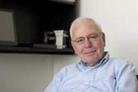

I have had the chance to interview some important figures of computing.
| Leslie Lamport is a legendary figure of computing. While he is probably most well-known because of the open-source typesetting LaTeX macro package and book, arguably his most important contributions are in the domain of distributed systems; this is also the subject of this interview, done in May 2007. | Researcher, Microsoft |
| Chuck Thacker is one of the 16 technical fellows of Microsoft — the highest technical position one can achieve among the 75000+ employees of Microsoft. He has been one of the main designers and builders of the Xerox Alto, the first personal computer, in 1972, and one of the inventors of the Ethernet. At Microsoft he led the creation of the Tablet PC prototype. This interview was made in October 2006 |  Technical Fellow, Microsoft |
These interviews are licensed under a Creative Commons license.